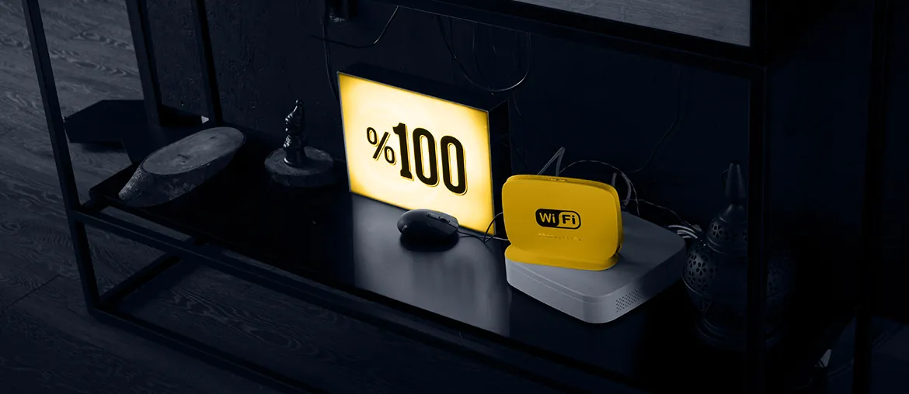

Scope the pilot
Map the release path across firmware, StreamScape, StreamLC, ATAK, and lab access rules. Then pick one pilot slice.
Saw Silvus hiring software and architecture roles while Motorola expands StreamCaster production. Here is how Elinext would add secure embedded and QA capacity without pulling your core radio team off roadmap work.
The signal says Silvus is scaling product output and software delivery. StreamCaster is more than radio hardware. It carries firmware, StreamScape, StreamLC, ATAK paths, and support workflows. That mix can pull scarce RTL, FPGA, firmware, and lab time into every release. If software lags production, field teams wait for fixes, tests, and validated tools.
A dedicated Elinext squad works under your PO or engineering owner.
Map the release path across firmware, StreamScape, StreamLC, ATAK, and lab access rules. Then pick one pilot slice.
Build simulator and remote-lab hooks so engineers can repeat radio workflows without broad hardware access early.
Add smoke tests for firmware settings, topology views, authentication, PTT, and version checks. Run them before weekly demos.
Ship test reports, CI jobs, access notes, and a backlog for the next sprint. Review it after the pilot.
Elinext is a full-cycle software development company, active since 1997. We have about 700 in-house specialists, with no freelancers or subcontractors. For Silvus, the useful parts are C/C++, Python, QA, AI/ML, and secure delivery. Our work is backed by ISO 9001 and ISO 27001 practices. Relevant customers include Siemens, Broadcom, Volkswagen, TRUMPF, TUI, and Parrot. We can run as a dedicated team under your owner. That maps to the pilot above, with weekly demos and clear access limits.

Elinext helped monitor physical and virtual network parts in real time.
Read case study
A dedicated team built an AI-powered tool for remote network support.
Read case studyTalk through one secure pilot around StreamCaster delivery.
Contact Elinext